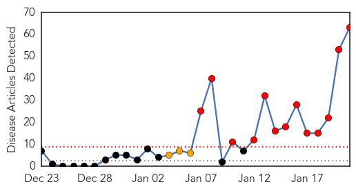
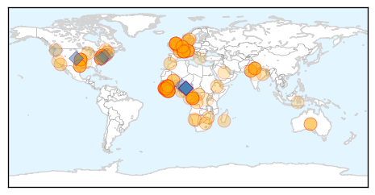
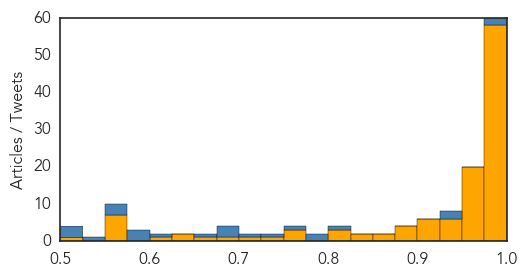

Measles
30-Day Web Trend
13 alerts, 3 warnings

30-Day Twitter Trend
0 alerts, 0 warnings

Article Locations

Article Confidences

Top Articles:
- 0.998
- 42 measles cases linked to Disneyland
- 0.997
- Measles outbreak linked to Disneyland grows
- 0.996
- California Measles Outbreak Shows How Quickly Disease Can Resurface in U.S.
- 0.995
- Measles outbreak in California: What you need to know
- 0.994
- 5 Disneyland employees diagnosed with measles
- 0.989
- Smart Woman: Measles Outbreak 2015 - Story
- 0.982
- More Measles Cases Traced To Disneyland; 59 Cases Now Confirmed In California
- 0.981
- UPDATE 1-Five Disneyland employees infected with measles in California
- 0.980
- Several Disneyland Employees Diagnosed With Measles
- 0.979
- Disneyland measles outbreak: Cases not limited to the unvaccinated
- 0.977
- CDPH: Don't go to Disneyland if you're not vaccinated
- 0.976
- Dozens of measles cases reported at Disneyland in California
- 0.974
- Disneyland measles outbreak spreads to Bay Area
- 0.974
- Measles outbreak includes 5 Disney theme park workers
- 0.971
- Several Disneyland workers diagnosed with measles
- 0.969
- San Diego County Measles Cases Climb To 13
- 0.966
- No measles vaccination? Don't go to Disneyland, state says
- 0.966
- Health Officials Monitor Those Exposed to Measles
- 0.966
- Health Officials: Skip Disneyland If You're Not Vaccinated For Measles
- 0.966
- People Not Vaccinated For Measles Urged To Stay Away From Disneyland
- 0.962
- Measles outbreak raises question of vaccine exemptions
- 0.952
- Three new measles cases reported in North County
- 0.948
- Disneyland workers being treated for measles
- 0.945
- 22-month-old girl is the latest to be hit by measles outbreak linked to Disney California
- 0.934
- As Disneyland measles outbreak spreads, O.C. bars students lacking proof of shots
- 0.934
- As Disneyland measles outbreak spreads, O.C. bars students lacking proof of shots
- 0.934
- As Disneyland measles outbreak spreads, O.C. bars students lacking proof of shots
- 0.934
- 23 unvaccinated Orange County students told to stay home after measles exposure
- 0.921
- Disneyland-Linked Measles Outbreak Here Rises to 13 Cases
- 0.899
- 3 New Measles Cases Confirmed in SD
- 0.884
- Lane County measles case: Patient did not attend Rose Bowl, officials say
- 0.883
- Disney's Measles Outbreak—A Reason To Reconsider Upholding Vaccination Practices
- 0.879
- KATU.com - Portland News, Sports, Traffic Weather and Breaking News - Portland, Oregon
- 0.871
- Measles outbreak includes 5 Disney theme park employees
- 0.869
- This is California’s worst measles outbreak in 15 years
- 0.866
- Several Disneyland employees diagnosed with measles
- 0.845
- Measles cases continue to spread in California
- 0.836
- 5 Cast Members Contracted Illness During Recent Incident
- 0.816
- Five states reporting measles cases traced to Disneyland outbreak
- 0.815
- Measles Cases Continue To Spread, 59 Now Infected « CBS Sacramento
- 0.811
- If you've been vaccinated, how protected are you?
- 0.804
- Vaccine waivers now require educational meeting
- 0.803
- Five Disney Employees Hit by Measles
- 0.797
- 2 Your Health: "Only a matter of time" before measles comes to Alaska, health officials say
- 0.789
- Measles scare on Singapore to Perth Scoot flight, health authorities warn of symptoms
- 0.787
- Measles Outbreak Spreads, Infects 5 Disneyland Employees
- 0.763
- Measles outbreak includes 5 Disney theme park employees
- 0.753
- Disneyland measles crisis should wake up the anti-vaccination crowd
- 0.753
- Students Who Haven't Been Vaccinated Banned from School Following Disneyland Measles Outbreak
- 0.724
- Measles outbreak highlights low vaccination rates at SoCal schools
Showing top 50 articles...
Top Tweets:
-
No tweets found for Jan 21, 2015
Ebola
30-Day Web Trend
1 alerts, 0 warnings

30-Day Twitter Trend
0 alerts, 0 warnings

Article Locations
Article Confidences
Top Articles:
- 1.000
- Ambassador Samantha Power Updates African Diaspora On Ebola Crisis Response at Tadias Magazine
- 1.000
- South Africa helps to beat Ebola
- 1.000
- Australians With African Descent Discriminated Over Ebola Outbreak
- 1.000
- Ebola virus death toll exceeds 8,600: WHO
- 0.999
- Jodhpur man who died at AIIMS tests negative for ebola
- 0.999
- Is this the beginning of the end for the Ebola outbreak?
- 0.999
- 'No room for complacency' UN says, urging vigilance in Ebola fight as West Africa marks progress
- 0.999
- Military tactics defeat Ebola
- 0.999
- Jodhpur man did not die of Ebola in Delhi: Health ministry
- 0.999
- UN reports significant drop in Ebola cases
- 0.999
- Liberia cremates 2,800 Ebola bodies
- 0.999
- UN: African Countries 'Vital' in Fight Against Ebola
- 0.999
- WCMC-Q expert allays Ebola fears
- 0.999
- 'No room for complacency’ UN says, urging vigilance in Ebola fight as West Africa marks progress
- 0.998
- Man's death sparks Ebola fear, tests negative
- 0.998
- Politico SL News UN Must Investigate West Africa Ebola Outbreak
- 0.998
- Ebola cases fall sharply in Sierra Leone
- 0.998
- Study shows how Ebola becomes lethal as it spreads
- 0.998
- U.S.-built Ebola treatment centers in Liberia are nearly empty
- 0.998
- Hospital worker from Jodhpur dies at AIIMS, doctors suspect dengue
- 0.998
- Schools reopen as west Africa turns page on Ebola epidemic
- 0.998
- Number of new Ebola cases declines: UNMEER head
- 0.998
- Phe Ebola Labs in Sierra Leone Making a Difference
- 0.997
- Ebola mutations could render some experimental drugs ineffective, Fort Detrick study finds
- 0.997
- Sierra Leone to reopen schools in March as Ebola infections slow
- 0.997
- Sierra Leone to reopen schools in March as Ebola infections slow
- 0.996
- Signs of hope in battle against Ebola?
- 0.996
- Ebola scientist warns business elite
- 0.996
- Press Release Distribution
- 0.995
- Doctors Without Borders Opens Clinic for Pregnant Women With Ebola in Sierra Leone
- 0.995
- Oklahoma infectious disease unit ready to respond
- 0.994
- Ebola tests at East Surrey Hospital for Africa aid worker
- 0.994
- Russia allocates $8 mln as its contribution to global anti-Ebola efforts
- 0.993
- Statement on the 4th meeting of the IHR Emergency Committee regarding the 2014 Ebola outbreak in West Africa
- 0.993
- South Africa to help fight Ebola in Sierra Leone
- 0.993
- Ebola Virus Mutating Continuously; May make Drugs Less Effective
- 0.993
- Guinea: Three priests beaten and held hostage for 'spreading Ebola'
- 0.993
- UK Nurse Pauline Cafferkey's Condition Improves After Being Critically Ill With Ebola
- 0.993
- Jane Goodall: We Need an Ebola Vaccine for the World's Chimpanzees and Gorillas
- 0.992
- GEESKA AFRIKA ONLINE The Horn of Africa Intelligence News Group Ethiopia: Anbessaw Haile Died of of cerebral malaria not Ebola
- 0.991
- New Ebola treatments could be obsolete before they're even available, say scientists - Panorama
- 0.991
- [PHOTOS] The Hidden Heroes of Ebola
- 0.990
- Davos: UN launches $1 billion appeal for global Ebola response
- 0.990
- Edinburgh’s new Ebola lab tests 8 samples
- 0.989
- UN Says Despite Progress, Fight Against Ebola is Far From Won
- 0.989
- Scotland's first Ebola lab screens eight possible cases since being established in December
- 0.989
- Passenger hospitalized in New Jersey is Ebola-free, released
- 0.985
- Ebola outbreak: UN chief calls for final $1 billion
- 0.985
- Press Note Viral Hemorrhagic Fever cases reported from a Private Hospital
- 0.985
- Possible case of Ebola in Quebec, deemed low-risk
Showing top 50 articles...
Top Tweets:
- 0.907
- Just seven Ebola cases yesterday in Sierra Leone http://t.co/IXtIjq3DZu
- 0.866
- RT: Ebola: primary emphasis must be on ‘getting to o’ Ebola cases,by stopping transmission in 3 most affected countries. http://t…
- 0.823
- The Western Africa Ebola Virus Disease Epidemic Exhibits Both Global Exponential and Local Polynomial Growth Rates http://t.co/TKhtIyHyC4
- 0.822
- Mutant Ebola Virus May Evade Drugs, Study Finds http://t.co/JCt2WGsYOV
- 0.792
- Join the bandwagon and SMS STOP EBOLA to 7979 to Sponsor an Aid Worker to Fight Ebola Africaagainstebola
- 0.731
- Vos dons peuvent sauver des vies ! Soutenez l'initiative en envoyant STOP EBOLA au 7979 ! AfricaAgainstEbola gabon
- 0.729
- Food insecurity is a hidden cost of the Ebola epidemic. @FAOnews estimates 120K Sierra Leoneans are food insecure http://t.co/3R9aW1md7v
- 0.716
- An Ebola hero! MT: Epidemiologist Diane Gross is going to W. Africa to fight Ebola. Follow her WHODiane http://t.co/oj429TVJvq
- 0.705
- Touched by the pain of the Ebola epidemic - testimonial http://t.co/mARUMO6fBb via
- 0.704
- RT: In West Africa, our troops, our scientists, our doctors, nurses, and healthcare workers are rolling back Ebola – saving count…
- 0.698
- At this point, Ebola unlikely but not impossible. H7N9, MERS: both similar.
- 0.663
- RT: Ministry hires experts to combat MERS, Ebola — http://t.co/xU4NuV0OqJ
- 0.662
- MT: "In W. Africa, our troops, our scientists, our drs, our nurses & healthcare workers are rolling back Ebola " @BarackObama
- 0.604
- RT: Kebeh is a midwife at a Community Health Centre in Liberia, which we're supporting with medical supplies. Ebola http:…
- 0.580
- Ebola priority, but concerned for thousands of children in W Africa not being immunized against other diseases. http://t.co/a6MQxbgeKa
- 0.571
- Fighting Ebola: The key to stopping the virus: Behavior change http://t.co/dA8d2hJbxJ
- 0.568
- Is this the beginning of the end for the Ebola outbreak? http://t.co/1BsHW965wS
- 0.558
- A long-awaited Ebola vaccine trial is to start soon in Liberia, which had 21 new cases in the past 21 days. Hard to see trial succeeding.
- 0.557
- Jimmy B also made a movie about Ebola, called A Stitch in Time: the Ebola story. We're holding out for a copy http://t.co/jEoXiOCCN1
- 0.544
- No new Ebola cases reported in most of Liberia counties over past week https://t.co/nkHrGIbwja EbolaResponse http://t.co/ntHhekdnYo
- 0.530
- Exactly. Look how much has been/is being done about Ebola, when ppl got motivated; vs. MERS.
- 0.507
- RT: The President on Americans who have helped stop spread of Ebola: "We couldn’t be prouder of them"
- 0.502
- Things are going in the right direction but Ebola is still a global public health emergency, @WHO experts say. http://t.co/JZAxKjzP0Q